Twelve things · Miami
Portfolio
Every screen below is the real product, recorded.
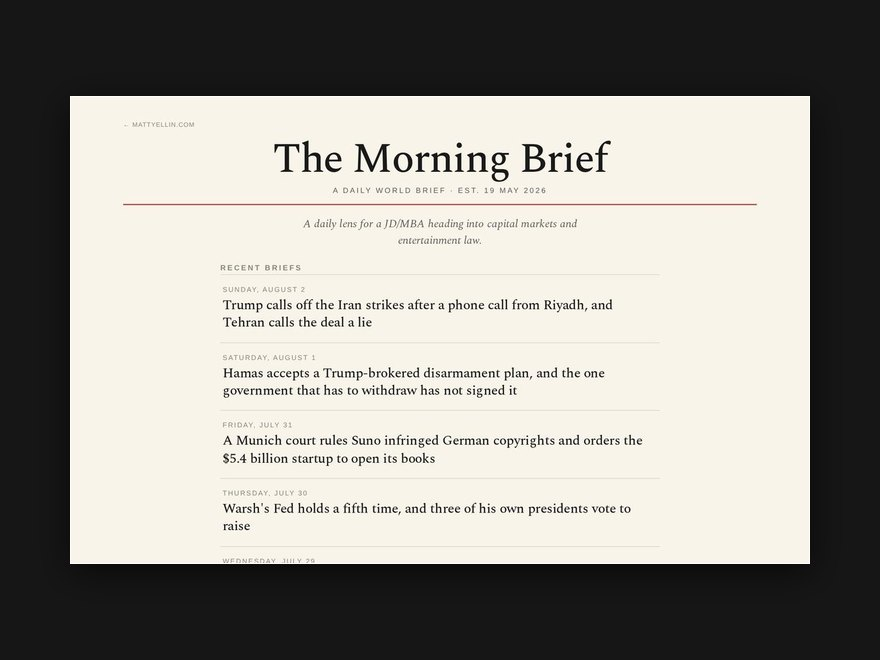
01 The Morning BriefVol. I No. 75 · Daily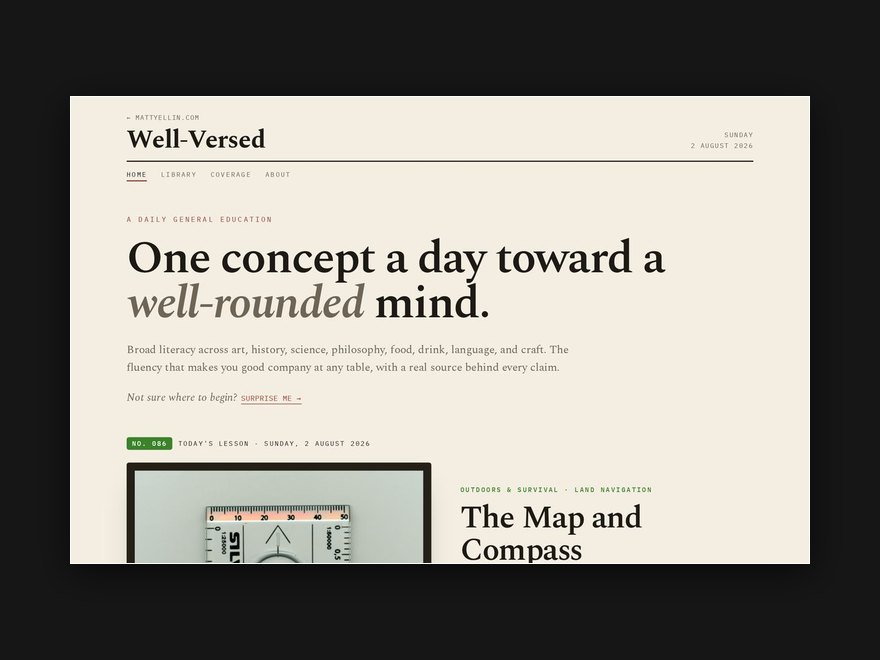
02 Well-VersedDaily · every lesson kept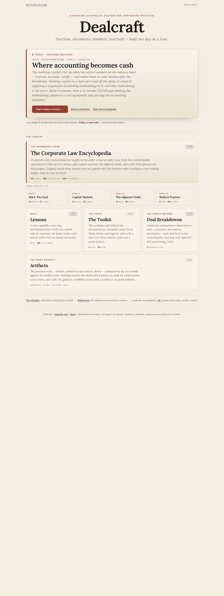
03 DealcraftLesson 016 · two-year build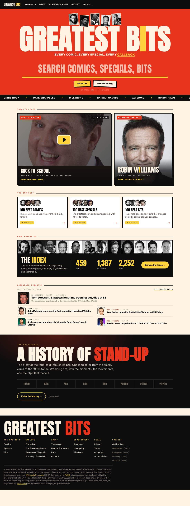
04 Greatest Bits459 comics catalogued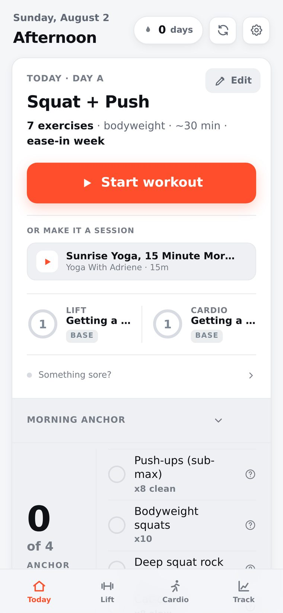
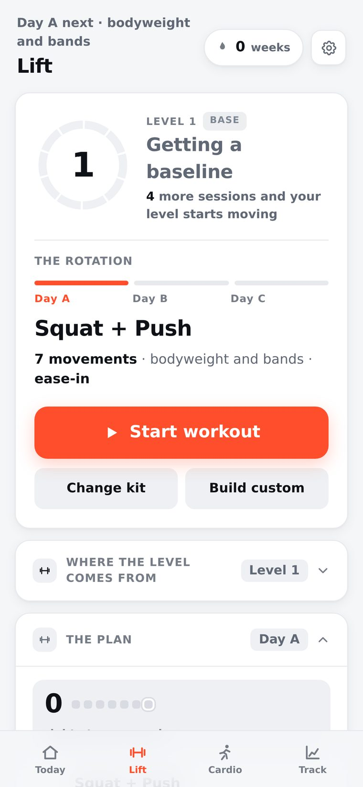
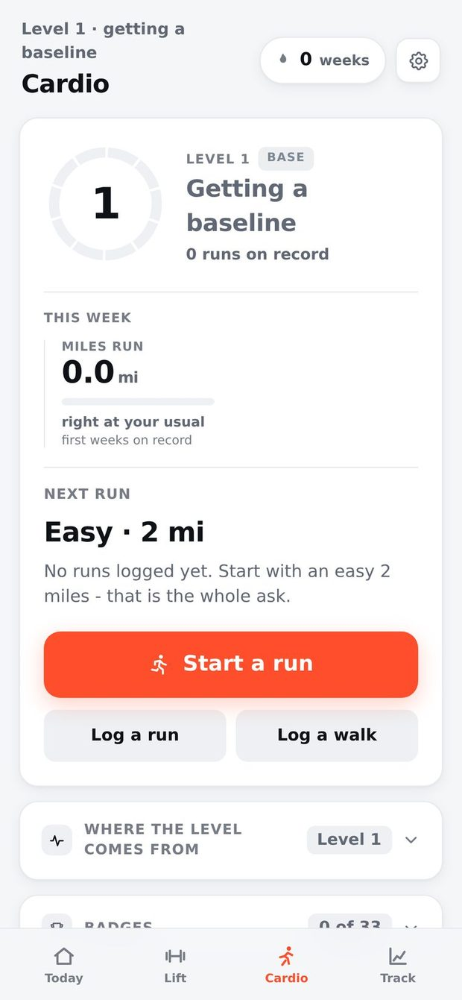
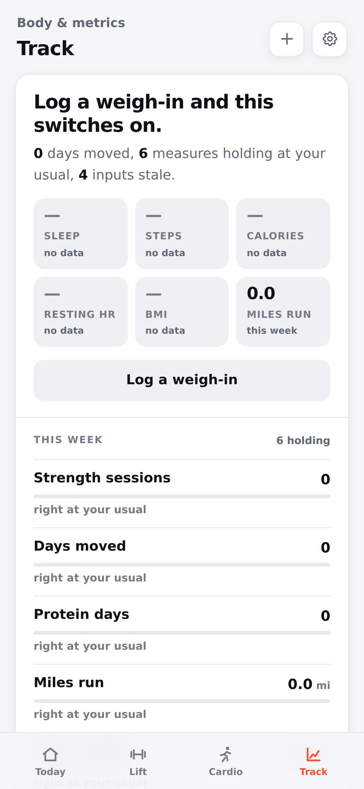
05 Trainv7.77 · no number you can fail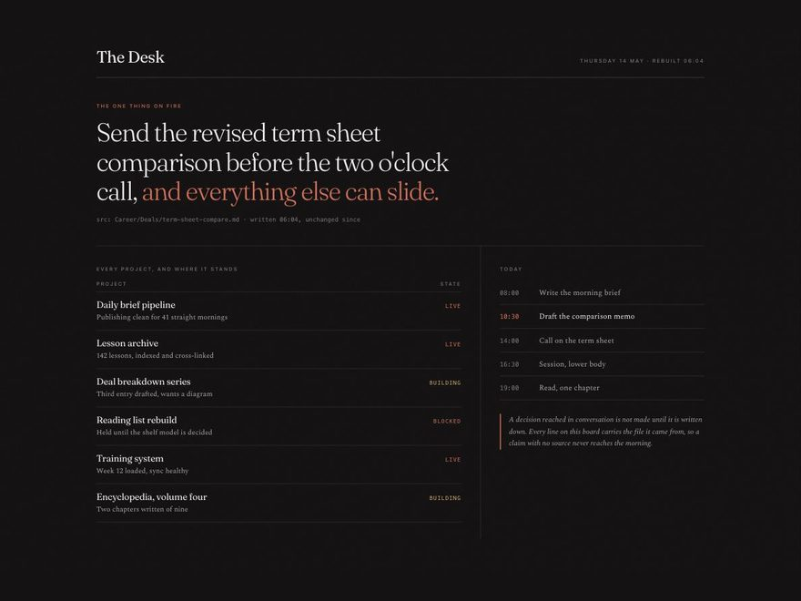
06 The DeskRebuilt each morning · one writerA decision reached in conversation is not made until it is written down.
Twelve things, built one at a time. Four of them run without me.
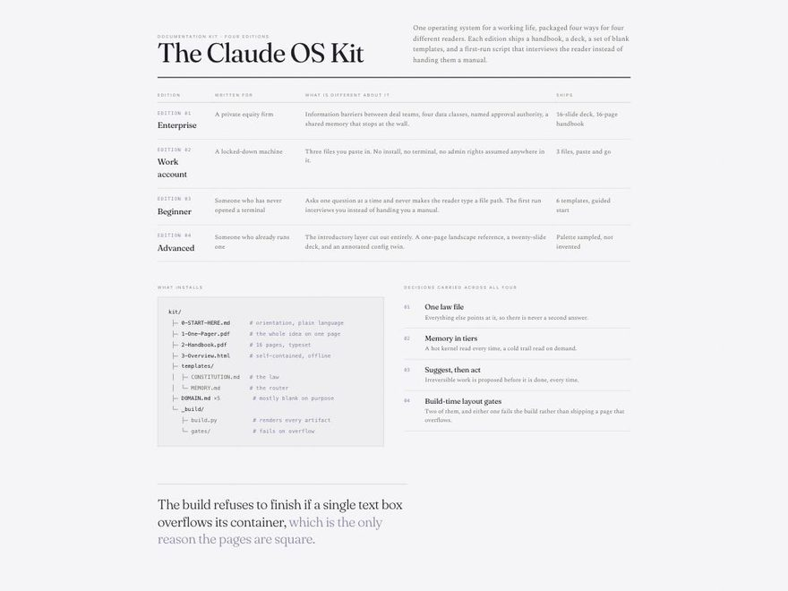
07 The Claude OS KitFour editions shippedA document that overflows is a document nobody trusts.
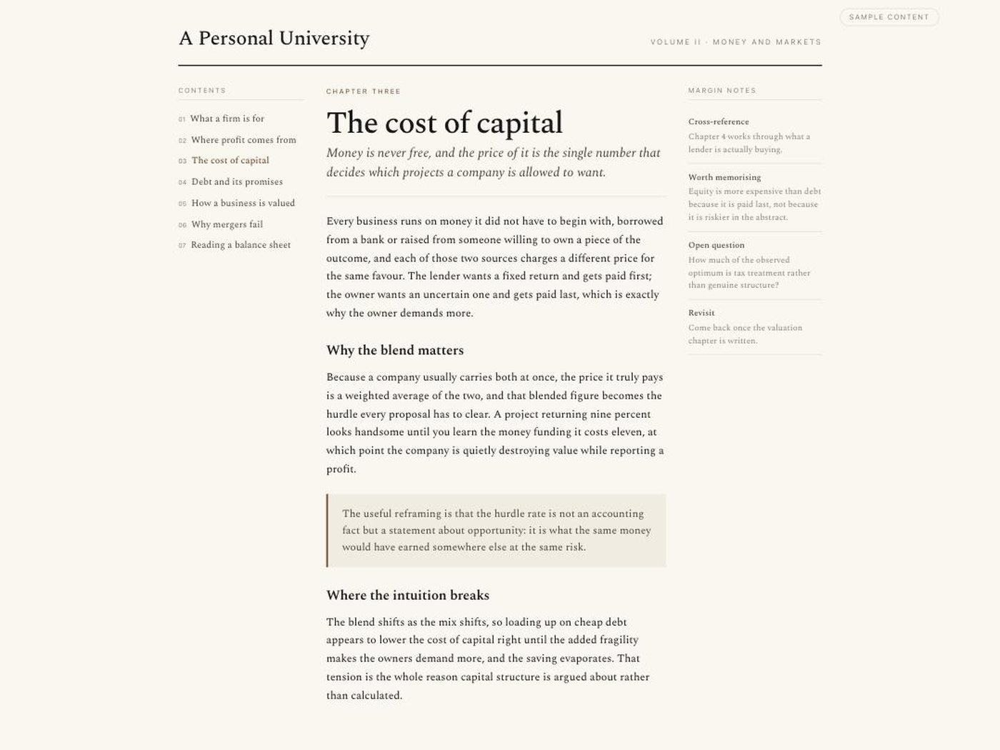
08 A Personal University48 pages · a fourth buildingNo scores anywhere. A grade is not the test of whether you understood it.
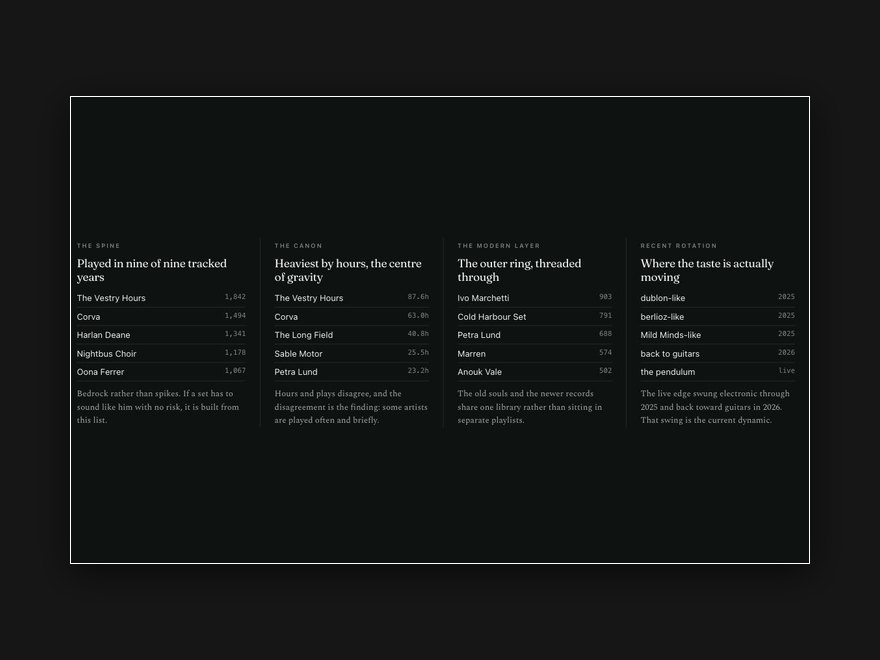
09 The Listening Record5,068 artists · 66,253 playsEvery set verified by opening it, rather than by trusting the write.
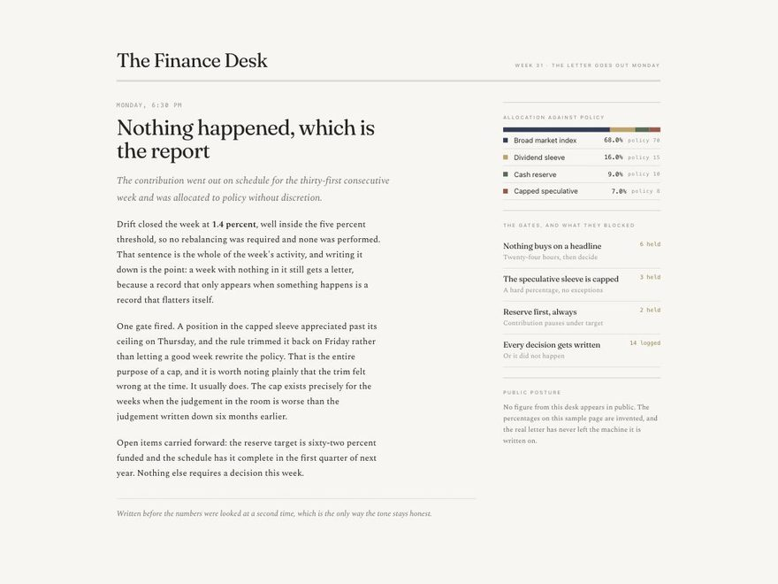
10 The Finance DeskA letter every MondayEvidence is named and dated, or it does not count.
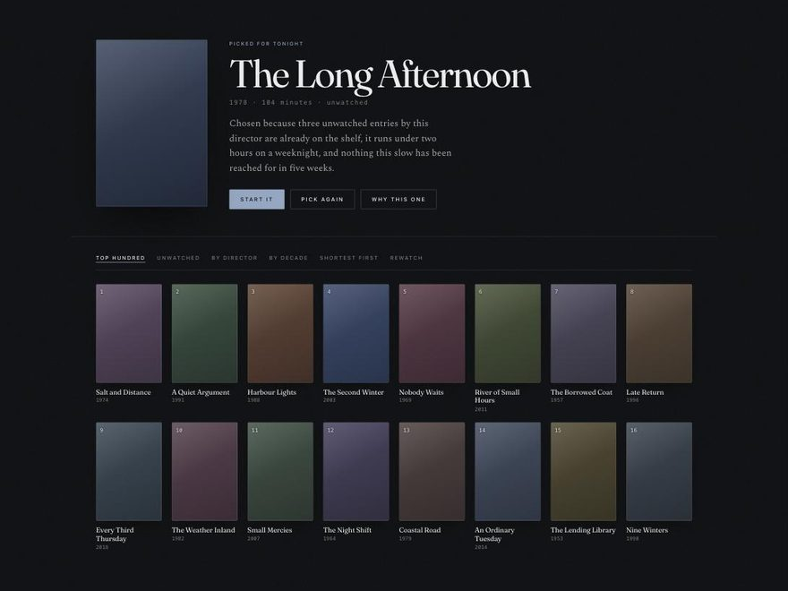
11 The Film LibraryA running top hundredThe point of a library is that it answers.
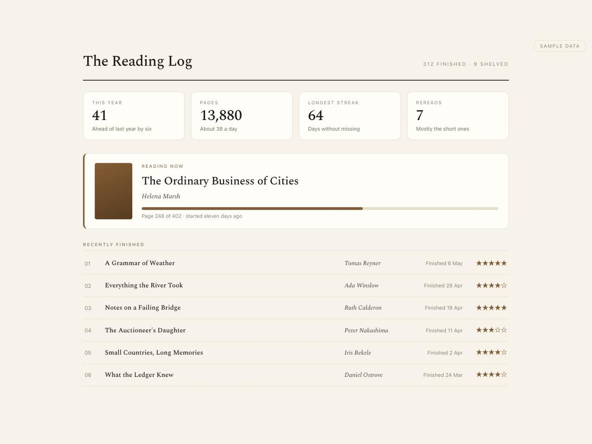
12 The Reading LogEvery book, shelved and countedA shape you can look at beats a vague sense that you have not been reading enough.